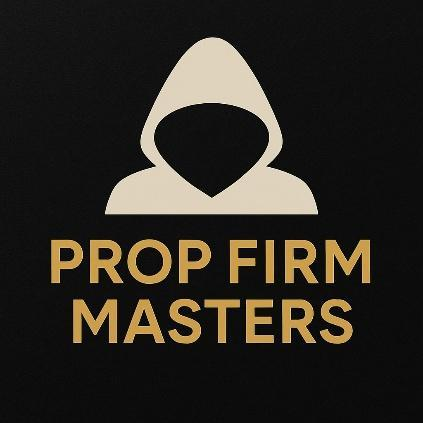
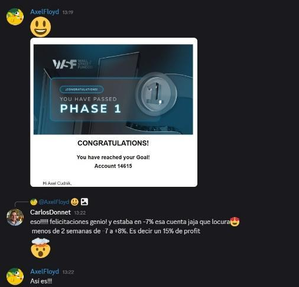

Pasá evaluaciones de fondeo de CFD
y cobrá de tus cuentas fondeadas
El modelo matemático de Carlos Donnet para que las pruebas dejen de costarte dinero y las cuentas fondeadas se conviertan en retiros.
1,3 M USDbajo gestión en CFD
Top 4mundial · competencia Darwinex 2024
Automatizableel modelo se aplica de forma automática
PROP FIRM MASTERS · CFD · 2026
El problema
Las evaluaciones de CFD no se pierden por la estrategia.
Se pierden por cómo se enfrentan.
Dos fases, límite de pérdida diaria, pérdida máxima, reglas de consistencia. Cada evaluación que se quema es dinero que no vuelve, y cada intento fallido suma presión al siguiente.
Prop Firm Masters no es otra estrategia de entrada. Es un modelo matemático: cuánto arriesgar, cómo encadenar las evaluaciones y cómo gestionar la cuenta fondeada para cobrar, calculado con números y no con intuición.
Es para vos si…
- Hacés o querés hacer evaluaciones en empresas de fondeo de CFD (FTMO y similares).
- Ya quemaste pruebas y querés dejar de financiar a la empresa.
- Tenés una estrategia y te falta un plan de riesgo para estas reglas.
- Ya estás fondeado y querés cobrar de forma sostenida.
No es para vos si…
- Buscás señales para copiar sin entender qué hacés.
- Esperás resultados sin seguir el proceso.
- No podés asumir el costo de una evaluación.
El proceso, en cuatro pasos
1Elegís la empresaLa empresa y el tamaño de cuenta que mejor se adaptan al modelo.
2Aplicás el modeloRiesgo calculado contra las reglas de cada fase de la evaluación.
3Pasás las fasesFase 1 y fase 2 con el procedimiento paso a paso.
4CobrásGestión de la cuenta fondeada para sostener los retiros.
Qué vas a aprender
Un modelo, de la evaluación al cobro
01
Evaluaciones · fase 1 y fase 2
Modelo matemático para pasar evaluaciones
Un modelo estadístico pensado para que, siguiendo los pasos, las evaluaciones dejen de ser una pérdida neta y operes sin el miedo a perder el costo de la prueba.
Incluye: el modelo explicado paso a paso · el procedimiento de aplicación · la automatización del modelo para que se aplique solo.
02
Cuentas fondeadas
Gestión profesional para cobrar
Qué hacer una vez fondeado para que la cuenta se convierta en retiros y no en una nueva evaluación.
Incluye: escalado de posiciones · protección del equity y reducción del drawdown · protocolos para cuidar la cuenta y sostener los retiros.
03
Empresas y reglas
Dónde y cómo aplicarlo
No todas las empresas de fondeo de CFD son iguales, y las reglas cambian.
Incluye: guía y recomendaciones de empresas confiables · cómo aprovechar las reglas y el apalancamiento de cada empresa a tu favor.
"Prop Firm Masters no solo te enseña a ganar: te enseña a dejar de perder en lo que más cuesta, que son las evaluaciones."
Quién te enseña
Carlos Donnet

Trader de CFD y futuros y desarrollador de sistemas propios aplicados al trading.
- 1,3 millones de USD bajo gestión en CFD.
- Top 4 mundial en la competencia internacional de traders de Darwinex (2024).
- Opera lo que enseña, con el mismo modelo de este programa.
A la izquierda: un alumno aprobando la Fase 1 de su evaluación.
1,3 MUSD bajo gestión en CFD
Top 4mundial · Darwinex 2024
3 módulosde la evaluación al cobro
Lo que es y lo que no es
- Un modelo con números claros.
- Reglas de riesgo pensadas para evaluaciones de CFD.
- Aplicable a la estrategia que ya usás.
- Una estrategia mágica.
- Señales para copiar sin criterio.
- Un atajo sin proceso.
Preguntas frecuentes
Antes de empezar
- Ya tengo una estrategia. ¿Me sirve?
- Sí. El modelo no reemplaza tu forma de entrar al mercado: define cuánto arriesgar y cómo enfrentar cada fase de la evaluación y la cuenta fondeada.
- ¿Sirve para cuentas de fondeo de futuros?
- No. Prop Firm Masters está pensado para empresas de fondeo de CFD. Para futuros usamos Tradevo MaxKiller, un sistema automatizado específico para esas cuentas.
- ¿Cuándo puedo empezar a aplicarlo?
- En tu próxima evaluación. La velocidad depende de tu disciplina y del mercado.
- ¿Tengo que hacer todo a mano?
- No. El programa incluye la automatización del modelo para que se aplique solo.
QUIERO ENTRAR
WhatsApp: +54 9 3364 56-4616 · Instagram: @carlosdonnet
Advertencia de riesgo. Operar CFD implica un riesgo elevado de pérdida y puede no ser adecuado para todos; en algunos países los CFD no están disponibles para inversores minoristas. Prop Firm Masters es un programa educativo y no constituye asesoramiento financiero. Los resultados mencionados no garantizan resultados futuros. Las condiciones de cada empresa de fondeo las fija esa empresa y pueden cambiar: verificalas antes de comprar una evaluación.